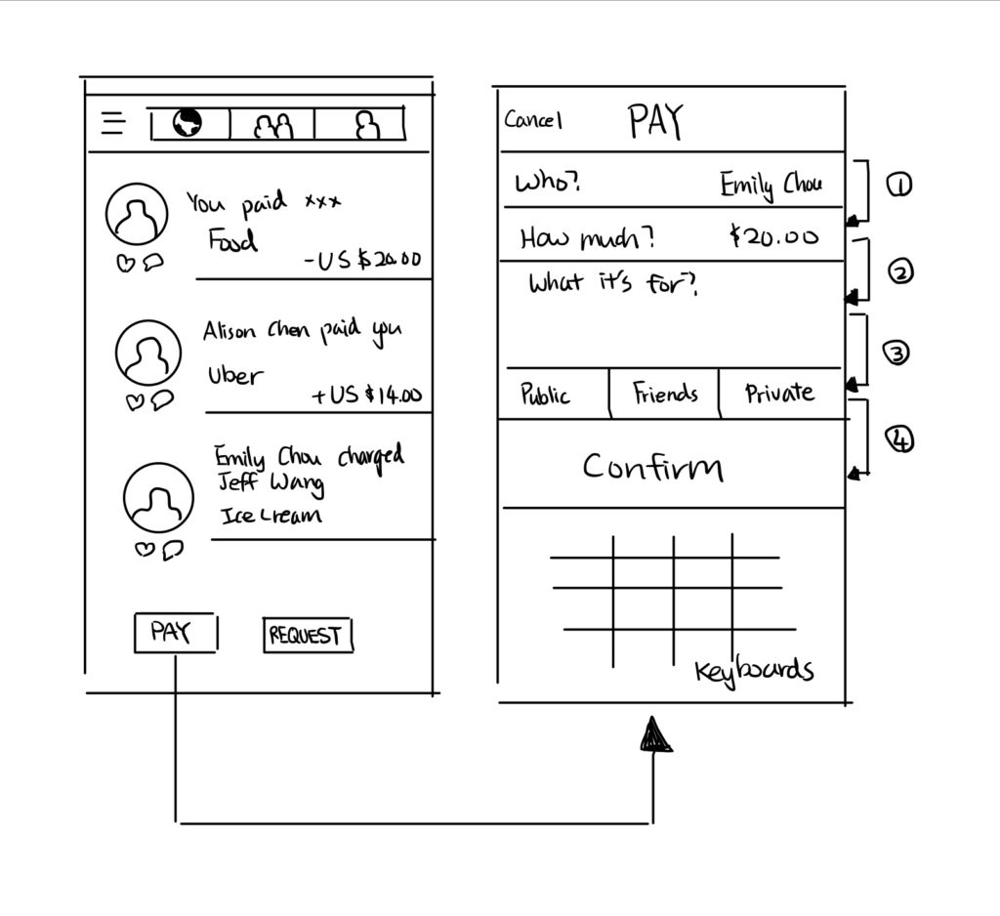

Our group decided to conduct four interviews each, divided into two types of people: two who have used Venmo before and two that have not used Venmo before.
Since Venmo is widely used by students, we would be able to use convenience sampling to collect data from college students who often use it, as well as freshmen who have seldom or never used it before. We collected data from various locations such as Geisel, Price Center, and study lounges.
We also decided to interview people who are above 25 years old, including people in the workplace (off campus) and parents, to collect a more accurate and representative sample of the general population.
We wrote questions that would go well before/after the interviewer performed the usability test, which have been modified after the suggestion from critique sessions to make them less leading.
Interface Product (iOS Version)
Thank you for choosing to participate in our usability test. The purpose of this test is to see what the issues are with this particular product and our end goal is to try and fix them. Venmo is a smartphone application that is used commonly to send and request money from people through the internet.
In order to continue with the test, we need your agreement to record this interview and observe your actions.
[Ask for agreement]
In this usability test, you will be given two scenarios in using this application regardless of if you have used the application before. As you go about the scenarios, we ask that you voice what actions you are taking in order to complete the scenario. We will be able to answer any questions about the scenarios but will try refrain from answering any questions if you are stuck on a certain action. If you find yourself stuck, please mention this. Through your duration of this test, please remember it is never the user’s fault if something does not operate smoothly.
A last important note, this application uses money. We will always return/send the money back to you if your own person account is used. For this reason, you should also not use any actual money unless we specifically instruct you to. We need your agreement to utilize your own smartphone. If not, you will use one of ours.
[Ask for agreement]
Step 1: Your friend paid for your lunch at Subway yesterday and he/she said “It’s okay, you can just Venmo me later.” The total was $6.32 for your sandwich. Venmo, or send money, to your friend whose Venmo username is @val-gonzaga the appropriate amount (in this case, it is okay to send the amount of $0.01).
Reminder to please vocalize all the steps you are taking from start to finish.
Step 2: You paid for your friend’s dinner a couple of days ago and they still have not paid you back. You send a text to them asking if it is okay if you request the money on Venmo.
Request $0.01 from @val-gonzaga for “Food” on Venmo.
Reminder to please vocalize all the steps you are taking from start to finish.
Our group discovered several errors and trends during the paying and requesting money process.
1. 4/16 users didn’t know where to pay and request money.
- Knowledge-based mistake
- No clue where do take action.
2. 3/16 users pressed another icon next to the pencil icon that they intended to press on.
- Action-based slip
- Mental model of pressing the pencil icon was correct
- Perhaps, the screen size was different to what they usually have, they were not familiar with the test phone, or their fingers just did not move to the correct place and caused them to press the wrong button.
3. 3/16 users would not go directly to the pencil icon, but to the menu bar.
- The designer’s conceptual model is not the same as the users’ mental model.
- The pay and request function does not have a clear signifier to guide the users.
4. 6/16 users would start actions by scrolling down the home page instead of going directly to the top right corner of the icon.
5. 5/16 users did not write down description before pressing “pay,” so the system has a pop-up message to remind the users to do so.
- Knowledge-based mistake
- Users considered the description box as optional and left it blank.
6. 5/16 users accidentally made the transaction public instead of private.
- Memory-lapse slip
- Interviewees knew that they needed to change the setting from public to private, but forgot to do so before pressing the “pay” button.
Rapid Prototyping
Higher Fidelity Prototyping
Problem 1 – 4: users didn’t know where to pay and request money.
Solution: Create a clear button as signifiers to lead the users for action. Put it at the bottom of the page as 6/16 users started actions by scrolling down the page, indicating they think the action should take place in the bottom of the page.

Problem 5: 5/16 users did not write down description before pressing “pay,” so the system has a pop-up message to remind the users to do so.
Solution: Users are only allowed to take the next steps after the previous step is completed. Hence, users are only allowed to press the button of confirm after they write down the description.

Problem 6: 5/16 users accidentally made the transaction public instead of private.
Solution: Similar to previous solution, users are only allowed to confirm the transaction after choosing the setting of privacy.

During the interview, one thing interesting that 3/16 users had mentioned is the disability to pay or request multiple users at the same time. Hence, my next step of this project may be adding this function. One thought I have for now is to allow the users to check multiple recipients in the following example:
`